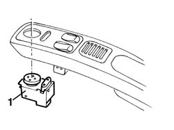
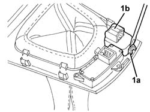

7005R40 rear view mirror-s and door mirror-s positioning switch unit - r r
- Path
- Procedures > 70 FITTINGS > 7005 PASSENGER COMPARTMENT FRONT SIDE DOORS > 7005R front door mirrors > 7005R40 rear view mirror-s and door mirror-s positioning switch unit - r r
- Kind
- repair procedure (removal / refitting; the operation number is the code)
- Applies to
- all engines; all production periods
- Interactive page
- https://sloeber94.github.io/elrnDB-a156/en/#/3238630
Applies to: all engines; all production periods
 Removing
Removing
 Refitting
Refitting7040L28 tunnel switch panel - r r
1. Remove the switch unit.

Applies to: all engines; all production periods
Refitting
RemovingCheck that the switch unit is not damaged.
If necessary, conduct an electrical test on the switches.
Fit the switch unit in the surround.
Applies to: all engines; production: da 03/02 a 09/03, da 10/03
Removing
Refitting7040L37 gear lever plate - r r
1. Use a screwdriver for leverage on the retainer (1a) and remove the mirror switch unit (1b).

Applies to: all engines; production: da 03/02 a 09/03, da 10/03
Refitting
RemovingCheck that the switch unit is undamaged.
Place the switch unit in position and engage it with the retainers.